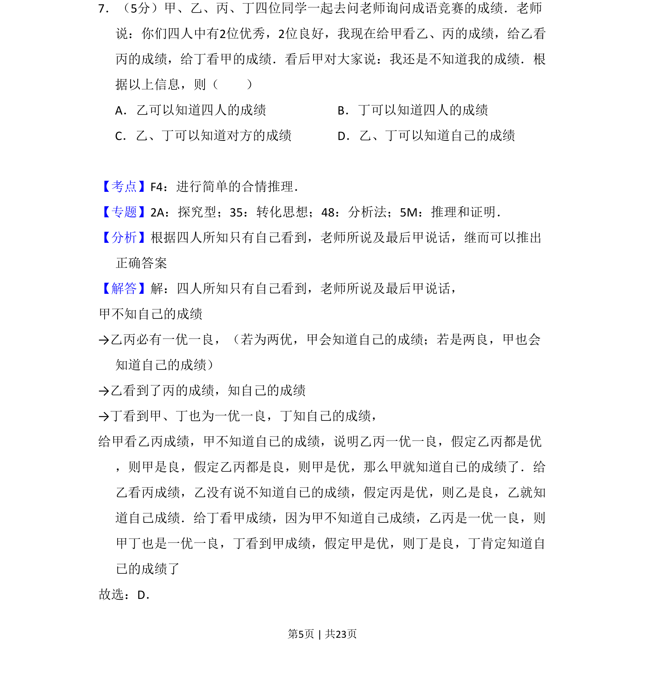
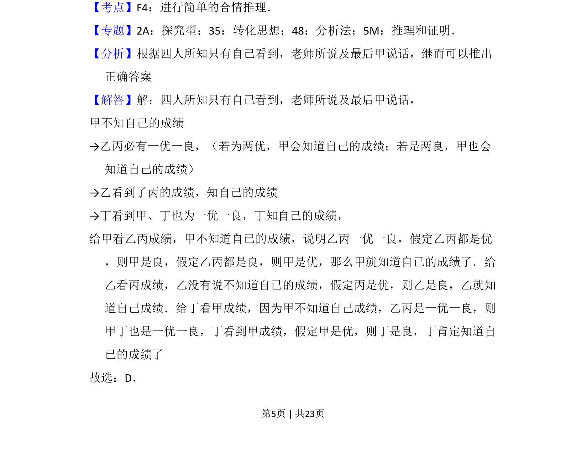
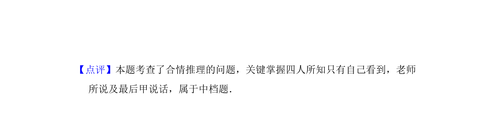

考点：合情推理 逻辑推理 条件分析

本题为逻辑推理题，通过成绩信息推断四人能否知道自己的成绩。


📄 原 PDF 第 5 页：
素材/真题/吉林/2008-2024·（吉林）数学高考真题/2017年高考数学试卷（理）（新课标Ⅱ）（解析卷）.pdf
7．（5分）甲、乙、丙、丁四位同学一起去问老师询问成语竞赛的成绩．老师 说：你们四人中有2位优秀，2位良好，我现在给甲看乙、丙的成绩，给乙看 丙的成绩，给丁看甲的成绩．看后甲对大家说：我还是不知道我的成绩．根 据以上信息，则（ ） A．乙可以知道四人的成绩B．丁可以知道四人的成绩 C．乙、丁可以知道对方的成绩D．乙、丁可以知道自己的成绩
【考点】F4：进行简单的合情推理．菁优网版权所有 【专题】2A：探究型；35：转化思想；48：分析法；5M：推理和证明． 【分析】根据四人所知只有自己看到，老师所说及最后甲说话，继而可以推出 正确答案 【解答】解：四人所知只有自己看到，老师所说及最后甲说话， 甲不知自己的成绩 →乙丙必有一优一良，（若为两优，甲会知道自己的成绩；若是两良，甲也会 知道自己的成绩） →乙看到了丙的成绩，知自己的成绩 →丁看到甲、丁也为一优一良，丁知自己的成绩， 给甲看乙丙成绩，甲不知道自已的成绩，说明乙丙一优一良，假定乙丙都是优 ，则甲是良，假定乙丙都是良，则甲是优，那么甲就知道自已的成绩了．给 乙看丙成绩，乙没有说不知道自已的成绩，假定丙是优，则乙是良，乙就知 道自己成绩．给丁看甲成绩，因为甲不知道自己成绩，乙丙是一优一良，则 甲丁也是一优一良，丁看到甲成绩，假定甲是优，则丁是良，丁肯定知道自 已的成绩了 故选：D．